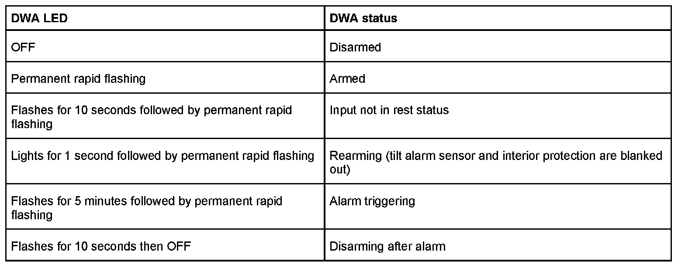
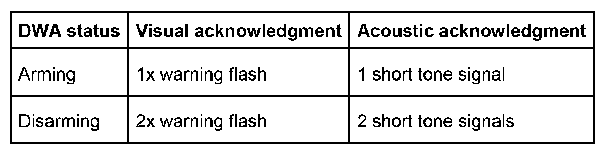

Antitheft Alarm System
Antitheft Alarm System
The antitheft alarm system (DWA) is controlled by the general module V of the central body electronics (ZKE).
The following inputs are monitored:
- Ignition lock (terminal R)
- Door contacts (front and rear)
- Hood contact
- Trunk lid contact
- Tilt alarm sensor
- Interior protection
An acoustic and visual alarm (country-specific coding) is triggered.
Function and components
Operation
The antitheft alarm system is activated automatically together with locking/arming of the central locking system (arming = ignition OFF, open and close driver's or passenger's door, lock vehicle via lock cylinder or radio remote control).
The coding data determines whether arming and disarming of the antitheft alarm system is to be possible only via the remote control or via the remote control AND the door lock (crossover operation).
If the antitheft alarm system can only be operated via the remote control, an alarm is triggered when the vehicle is unlocked via the door lock.
The inputs are monitored after arming and a waiting time of 3 seconds. This waiting time makes it possible to close the door for instance shortly after arming the antitheft alarm system. If, after arming, one or several input signals are not in rest position (e.g. door open) the status LED will flash for 10 seconds. A switch which is not in rest position is not included in the monitoring function.
The tilt alarm sensor and the interior protection are switched off if the antitheft alarm system is armed within 10 seconds after arming it for the first time (key turned once again in door lock or corresponding button on remote control pressed). In this way, the risk of a false alarm is avoided under certain conditions (e.g. car trains or ship transport).
NOTE: When the system is armed, the lugged compartment is also accessible via the lock cylinder on the trunk lid/tailgate or the remove control without the alarm being triggered.
LED indicator
A light emitting diode (LED) which signals the DWA status serves as visual feedback. This LED is located on the rearview mirror.

The DWA LED flashes at a rate of once every 2 seconds. It blinks at a rate of twice per second.
The status of the input signals can be red out via diagnosis. This enables rapid troubleshooting in the event of an "LED flashing after arming".
Additional signaling
Additional feedback concerning arming and disarming (country-specific) can be set by way of coding.

Alarm triggering
The alarm is triggered by the general module. A siren serves as the acoustic signal generator.
The siren is activated for 30 seconds in the case of alarm. The alarm is interrupted immediately when the antitheft alarm system (DWA) is disarmed. The siren can be coded to permanent tone or intermittent tone (country-specific).
A visual alarm is triggered for approx. 5 minutes together with the acoustic alarm. The light switch center switches on the lights via the K-bus. The lights (only hazard warning or additionally low beam or high beam) to be activated as the visual alarm are coded country-specific in the general module.
The input responsible for alarm triggering is stored in the alarm memory in the general module. The alarm memory can be read out with the "short test" or with "read fault memory" in the diagnosis program and deleted with "clear fault memory".
Siren for Antitheft Alarm System
The electronic control and the battery are integrated in the siren. The emergency current siren can therefore be activated independently of the vehicle power supply system.
The siren is primed and deactivated via a line STDWA (the same line also activates and deactivates the tilt sensor and interior protection facility). The siren is informed of the alarm triggering status by the general module via the SIREN line. When the siren is armed, an alarm may still be triggered if the siren is disconnected from the vehicle electrical system or the vehicle battery is disconnected.
If the alarm is triggered by tampering with the emergency current siren, the alarm is not stored in the alarm memory as the general module cannot register the alarm.
Trunk lid/tailgate/rear window (E46 touring) open
When armed, the trunk lid / tailgate can be opened via the remote control or the trunk lid/tailgate lock without an alarm being triggered. On the E46 touring, the rear window can be opened using the remote control.
After opening, the trunk lid/tailgate contact (rear-window contact), the interior protection and tilt alarm sensor are deactivated as the input signal. The LED indicator flashes for 10 seconds. After closing the trunk lid/tailgate (rear window), the LED continues to flash and the contact as well as the tilt alarm sensor and interior protection are then monitored again for 3 seconds.
Emergency disarming
It may be possible that the antitheft alarm system (DWA) can no longer be disarmed in the event of the remote control or central locking systems failing. In this case, the emergency disarming procedure must be implemented to disarm the antitheft alarm system (DWA), however, an alarm will now be triggered.
Procedure:
- Unlock driver's door mechanically and open. An alarm is triggered, the DWA LED flashes.
- Close all doors, trunk (trunk) lid and hood (hood)
- Switch ignition lock from position "0" to position "1" (terminal R); the DWA LED lights up.
- The system is disarmed after a waiting period of 10 minutes has elapsed and the DWA LED goes out.
The emergency disarming procedure is terminated if a door is opened or the setting of the ignition lock is changed during this waiting period.
Emergency disarming is resumed by switching the ignition lock to terminal R after closing the door.
Panic mode (country-specific coding)
A vehicle alarm can be triggered via the remote control by pressing the "trunk lid/panic" button on the remote control key for longer than 1 second.
Triggering this "panic" mode triggers an acoustic and visual alarm irrespective of the current DWA state. "Panic" mode is terminated by disarming or arming the antitheft alarm system (DWA) as well as by unlocking the doors with the key.